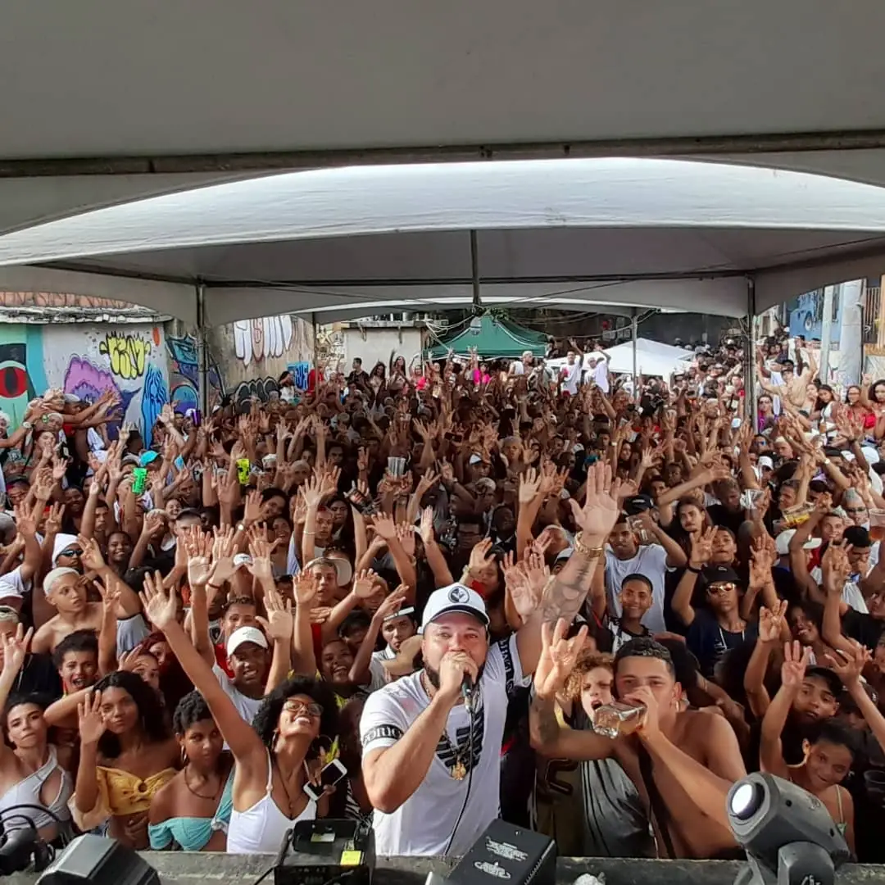
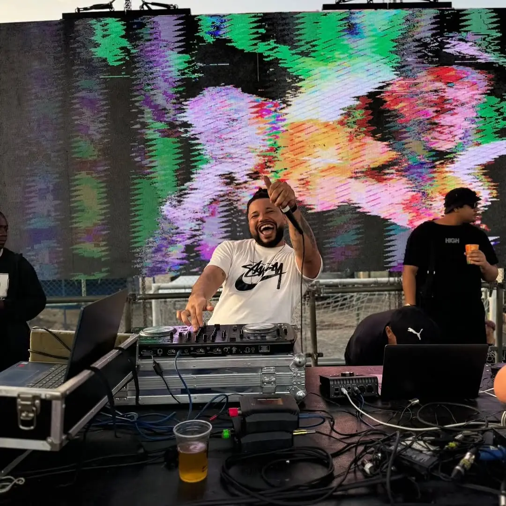
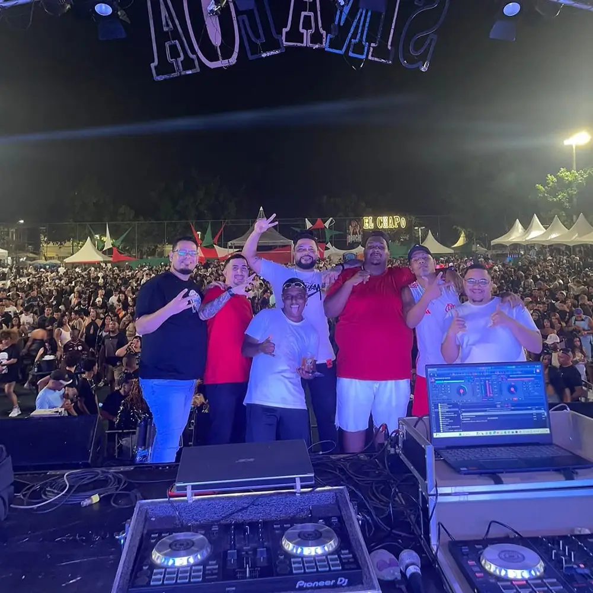

Próximas datas em São Luís
- 05 nov Quinta, 20h Casa da Sogra
- 06 nov Sexta, 22h Chácara da DZ7Pela primeira vez
A agenda de São Luís e do Maranhão está aberta. Reserve a sua data.
Tem casa, baile ou festa no Maranhão? A próxima linha dessa agenda pode ser a sua.
Reservar uma dataOnde a ritmada toca, a pista responde.



Do Complexo da Coréia para o Maranhão
Nascido em Senador Camará, no Complexo da Coréia, Rio de Janeiro, Jamaica é apaixonado por funk desde criança. Como DJ e produtor, mistura a batida tradicional com elementos modernos e fez da ritmada a sua marca.
O nome ganhou força dentro e fora do Rio com o Mega Beat Coréia, produção que passou de 1 milhão de visualizações. Agora a ritmada desembarcou em São Luís, a cidade que o Brasil conhece como a Jamaica brasileira.
- visualizações no Mega Beat Coréia
- +1 mi
- seguidores no Instagram
- 18,4 mil
- ouvintes mensais no Spotify
- +15 mil
Ouça antes de contratar
Já dividiu faixa com
MC Urubuzinho, Mc Henry, Mc Parelha, MC Tavinho 021, Boa Pinta, DJ Lindão, Dj Galaxy da Romênia, Dj Pretinho da Vila, DJ Guigo, MC Rafaella e outros nomes do funk.
Leve a ritmada para o seu evento
Preencha com a data e o local. O pedido abre no seu WhatsApp, pronto para enviar direto ao DJ Jamaica.
Prefere chamar direto? (21) 98605-3404